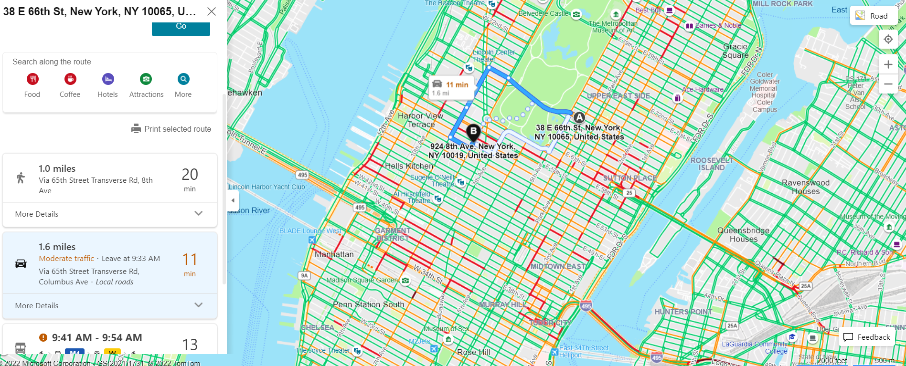
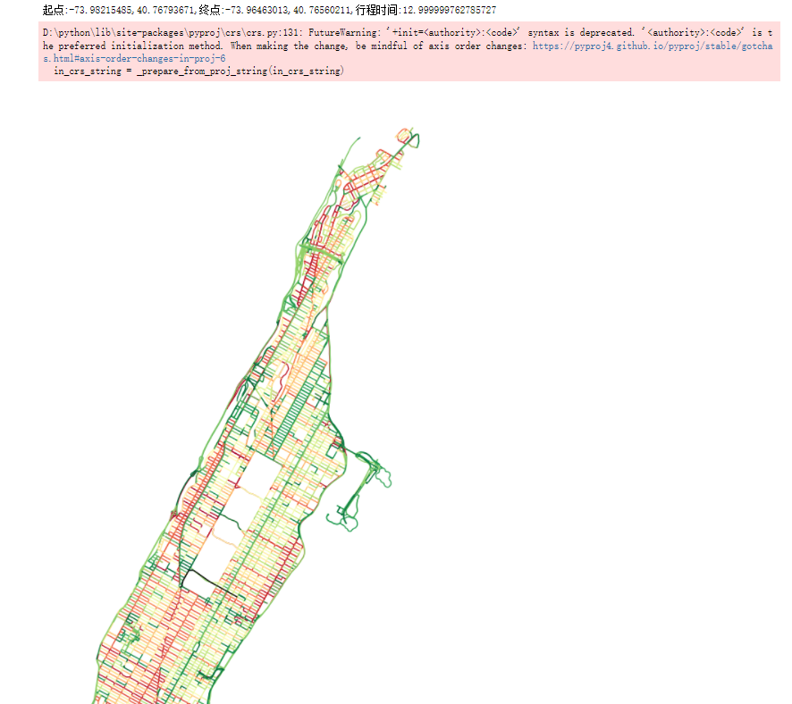
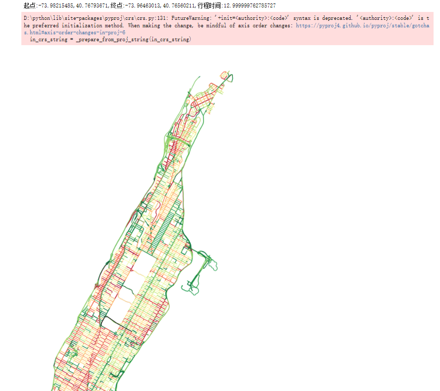

Our prediction is as follows:
Our prediction is as follows:
Twenty-first century urban planners have identified the understanding of complex city traffic patterns as a major priority, leading to a sharp increase in the amount and the diversity of traffic data being collected. For instance, taxi companies in an increasing number of major cities have started recording metadata for every individual car ride, such as its origin, destination, and travel time. In this paper, we show that we can leverage network optimization insights to extract accurate travel time estimations from such origin–destination data, using information from a large number of taxi trips to reconstruct the traffic patterns in an entire city. We develop a method that tractably exploits origin–destination data, which, because of its optimization framework, could also take advantage of other sources of traffic information. Using synthetic data, we establish the robustness of our algorithm to high variance data, and the interpretability of its results. We then use hundreds of thousands of taxi travel time observations in Manhattan to show that our algorithm can provide insights about urban traffic patterns on different scales and accurate travel time estimations throughout the network.